1. How many house cats would it take to kill a Tyrannosaurus rex?
Verdict: ≈ 2,500 catsThe raw numbers look hopeless: a T. rex outweighs a cat roughly 1,800 to 1, and a single bite could delete a dozen cats at once. But the tyrant king has three fatal weaknesses: tiny arms that cannot groom cats off its own body, a tall body plan with vulnerable eyes and nostrils, and the stamina profile of an ambush predator — biomechanics studies suggest it couldn't sustain a chase for long without overheating.
Cats, meanwhile, are precision instruments: they climb, they cling, and they instinctively go for the face. Only 20–30 cats can physically engage the dinosaur at once, so this is a battle of rotation and attrition. Wave one blinds it — a T. rex's eyeballs are grapefruit-sized targets and utterly indefensible against a clawed animal on its snout. A blind T. rex then thrashes, stomps, and exhausts itself while relay teams open thousands of shallow wounds around the ankles, tail base, and throat, targeting the ankle flexors until it can no longer stand.
An 8-tonne animal that falls and cannot rise is finished; death comes from exhaustion, blood loss, and suffocation under a purring blanket. Expect catastrophic feline casualties — perhaps 60% — from bites, tail swipes, and stomping. Accounting for losses, rotation shifts, and a reserve force, you'd need about 2,500 cats. Realistically, 2,499 of them would wander off mid-battle, which is why the estimate includes a margin.
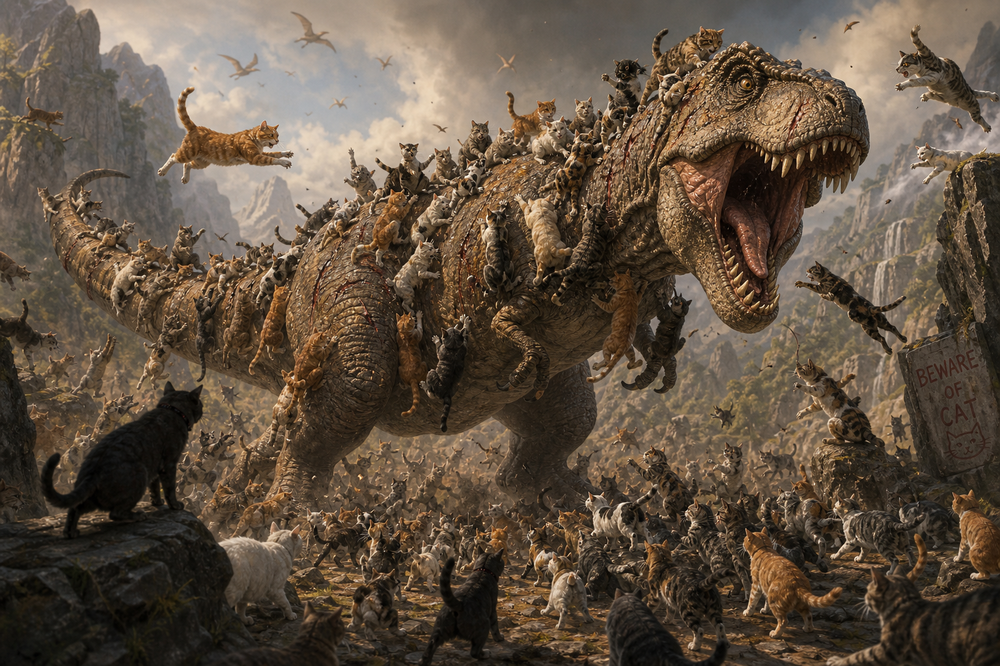
2. How many honey badgers would it take to kill a woolly mammoth?
Verdict: ≈ 120 honey badgersThis is the most favorable pound-for-pound matchup on the list, because the honey badger is less an animal and more a grudge wrapped in leather. Honey badgers shrug off African porcupine quills, bee swarms, and cobra venom, and they attack lions on principle. A mammoth's defenses — trampling, tusk sweeps, and a prehensile trunk — all rely on pinning or striking, and the honey badger's absurdly loose hide means even a direct hit often just relocates an angrier badger.
The winning strategy writes itself: badgers dig and grapple at ground level, precisely where a mammoth cannot see over its own tusks. Teams of ten target each leg's Achilles region and the soft skin behind the knees, while others climb the wool like a rope ladder to reach the trunk — the mammoth's single most vulnerable organ, packed with blood vessels and essential for drinking. A mammoth that can't drink loses on a timescale of days; one hamstrung on two legs loses in an hour.
Sixty badgers could plausibly do the job over a brutal day-long siege, but mammoth stomps are genuinely lethal and some losses are unavoidable — call it 30% casualties. With attack teams, replacements, and a digging corps to open trench cover, about 120 honey badgers brings down the mountain of wool. The badgers would like it noted they would also have accepted worse odds.
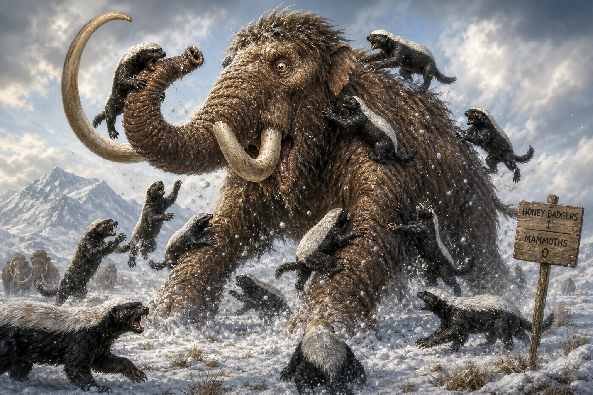
3. How many chickens would it take to kill a Velociraptor?
Verdict: ≈ 5 chickensSurprise: this one is nearly a fair fight. The kitchen-stalking monsters of Jurassic Park were scaled-up inventions — the real Velociraptor mongoliensis was about the size of a large turkey, roughly 15 kg of feathered Cretaceous menace. Its weapons were real: a sickle claw on each foot for pinning prey, a long stiff tail for agility, and a mouthful of serrated teeth. But it was built to kill small mammals and juvenile dinosaurs, not to fight a coordinated flock.
Chickens are themselves dinosaurs — the closest living relatives of the raptor family among common farm birds — and they retain the hardware: spurs, flock mobbing behavior, and shocking aggression when a threat enters the yard. A lone hen loses instantly. But chickens mob. The raptor's sickle-claw pounce can only pin one bird at a time, and while it's occupied, two roosters flank it with spur strikes to the head and neck. Chicken losses are expected — the first bird pinned is probably not coming home to roost.
Give the flock five chickens — at least three of them roosters — and the raptor is overwhelmed: one bird sacrificed to the pounce, two flankers delivering spurs, two more piling on. Sixty-six million years of evolution, settled in a barnyard in ninety chaotic seconds.
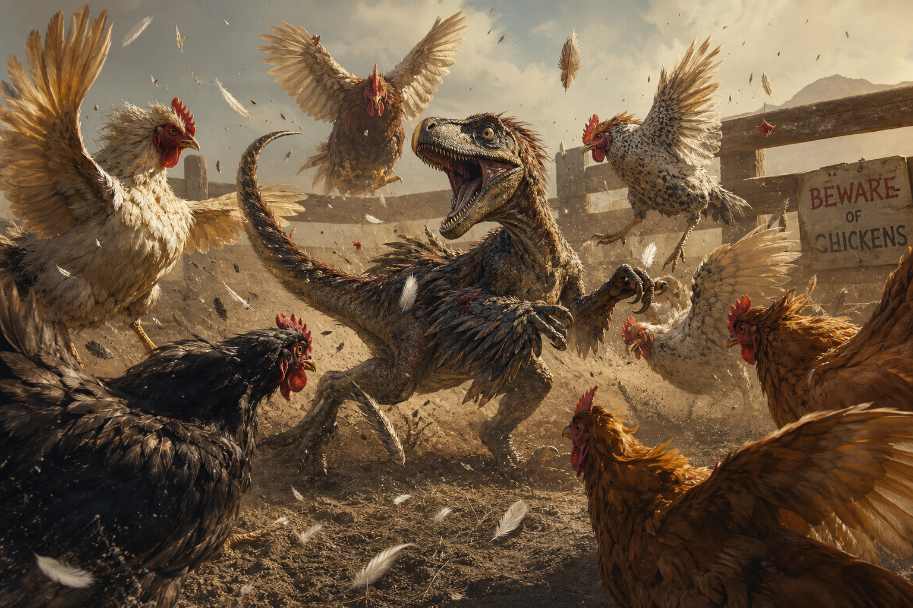
4. How many brown rats would it take to kill a Smilodon?
Verdict: ≈ 1,000 ratsThe saber-toothed cat is a glass cannon. Those iconic 18 cm fangs were surprisingly fragile against struggling prey — Smilodon used its wrestler's forequarters to pin victims before delivering a precise throat bite. Every part of that strategy fails against a swarm. You cannot pin a thousand rats. You cannot precision-bite a moving carpet. And each snap of those long sabers risks striking bone at a bad angle.
Rats bring three swarm superpowers: a bite that exerts enormous force for their size (rat incisors gnaw through cinder block), the ability to climb and cling to fur, and effectively unlimited aggression when cornered in mass. The swarm's strategy is pure attrition — hundreds of simultaneous bites to the belly, paw pads, tail, ears, and eventually eyes. A big cat's defense is swatting and biting, which kills perhaps two or three rats per second at peak fury. Sounds impressive, until you realize the cat tires in minutes while wave after wave keeps arriving.
Smilodon was an ambush sprinter with limited endurance. After ten minutes of frenzied swatting it is exhausted, lacerated in a thousand places, and losing blood faster than its body can compensate. Allowing for the several hundred rats it kills or maims before collapsing, about 1,000 brown rats ends the ice age's most famous predator. The rats' casualty officers report the losses as "acceptable, and honestly kind of fun."
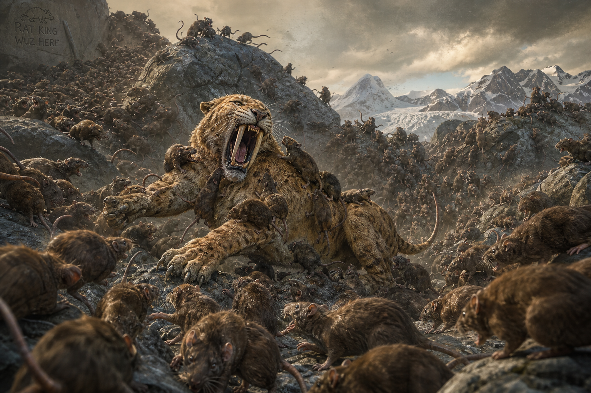
5. How many piranhas would it take to kill a Megalodon?
Verdict: ≈ 15,000 piranhasFirst, the awkward science: piranhas are freshwater fish and Megalodon ruled the open ocean, so we're staging this in a vast brackish estuary where both parties have agreed to appear. (Megalodon nurseries were in fact coastal and shallow, so it's less absurd than it sounds.)
A feeding frenzy of red-bellied piranhas can reduce a large animal to bone in minutes — each fish darts in, excises a bite-sized plug of flesh, and wheels away as the next takes its place. Against Megalodon, the swarm has two decisive targets: the gills, which are soft, blood-rich, and cannot be armored, and the eyes. Shark skin is a mail-coat of dermal denticles, tough enough to blunt most of the swarm's bites — but gill slits are an open door.
Megalodon's counterattack is genuinely terrifying: each gulp of that 2-meter mouth annihilates hundreds of piranhas, and its sheer swimming speed lets it burst away from the school to reset. But sharks must pass water over their gills constantly, and a gill curtain under continuous laceration means the giant is slowly suffocating even as it feasts. The math becomes a race: can the swarm bleed the gills faster than the shark eats the swarm? With ~3,000 piranhas lost per reset-and-feast cycle and several cycles before the gill damage becomes critical, roughly 15,000 piranhas are needed to drown the ocean's greatest predator in its own element. The estuary is not a nice place to swim afterward.
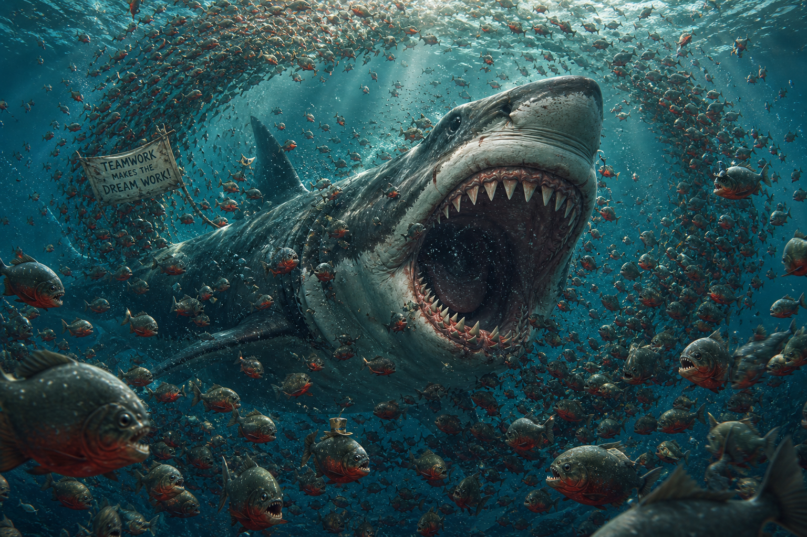
6. How many army ants would it take to kill a fire-breathing dragon?
Verdict: ≈ 2,500,000 ants (three full colonies)A dragon is the perfect anti-swarm weapon — fire breath incinerates ants by the hundred thousand, armored scales are impervious to mandibles, and flight makes the whole battlefield optional. So how do ants win? The same way army ants kill everything: they don't attack the armor, they attack the openings. Nostrils, eyes, ears, mouth, and the soft tissue between scales at every joint. A dragon is a fortress, and every fortress has vents.
The battle is decided by one immutable fact: the dragon must sleep, and ants do not. A colony marches day and night in relays. Fire is devastating but self-limiting — a dragon torching its own legs, belly, and treasure hoard to clear climbing columns does the ants' work for it. Each landing, each sleep, each meal is an opening for columns to flow into the nasal passages and down the throat, stinging and shearing at airways and stomach lining. Death comes not from a wound but from ten thousand small occlusions: swollen airways, blinded eyes, inflamed joints between scales, and eventually suffocation mid-slumber.
One colony of ~700,000 is decimated by fire before achieving penetration. Two colonies force the dragon airborne indefinitely — but even dragons must land. Three colonies attacking in relays across a week, absorbing horrific flame losses, get columns inside the perimeter. Call it 2.5 million army ants. The dragon's hoard, for the record, now belongs to the colony, which has no use for it and will not be returning it.
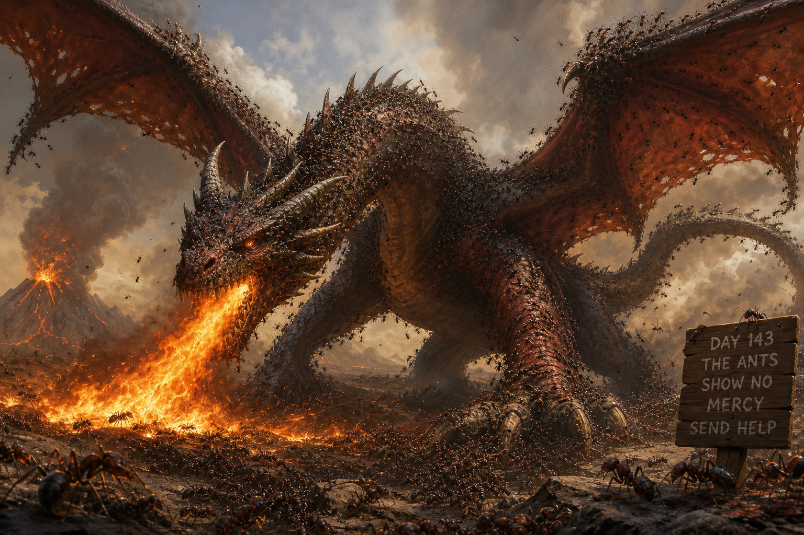
7. How many corgis would it take to kill a griffin?
Verdict: ≈ 40 corgisOn paper the griffin holds every card: lion musculature, talons that can carry off a horse (per medieval sources, who admittedly also believed in barnacle geese), and total air superiority. But the corgi was literally bred for this exact fight: a low, fearless herding dog engineered to dart under the hooves of cattle fifty times its size, nip precisely, and be gone before the retaliatory kick arrives. A griffin is, tactically speaking, just a very fancy cow with opinions.
The flight problem dominates the analysis. Ten corgis cannot win because the griffin simply leaves, then dive-bombs stragglers — talon strikes from altitude are unanswerable, and the first swooping pass is where most corgi casualties happen. But herding dogs excel at exactly one dark art: controlling where a large animal is allowed to go. A pack of forty works in shifts — a bait ring of six lures the dive, then collapses inward the moment talons touch grass. On the ground, a griffin's eagle head has a blind cone directly beneath its beak, and its lion body has corgi-height hamstrings. Sprained wings can't generate liftoff with four dogs hanging from each.
Grounded, hamstrung, and encircled by relay teams that never stop barking (psychological warfare is free), the griffin succumbs to exhaustion and a hundred precision nips. Forty corgis — organized as five squads of eight — claim the treasure hoard, which they immediately ignore in favor of a nap in a sunbeam.
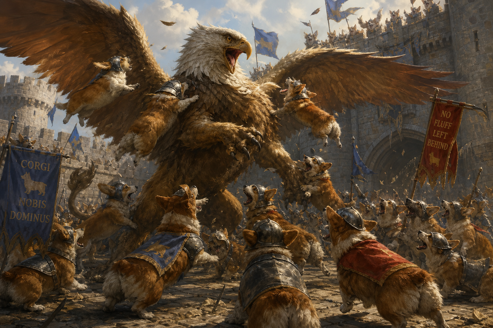
8. How many grey squirrels would it take to kill the Lernaean Hydra?
Verdict: ≈ 800 squirrelsThe Hydra's famous defense — cut off one head, grow two more — is worthless here, because squirrels cannot decapitate anything. This sounds like a weakness but is actually the key to victory: the Hydra's entire regenerative arsenal is triggered by exactly the attack squirrels are incapable of performing. The monster is optimized against swords and utterly unprepared for rodents.
What squirrels do possess: incisors that grow continuously and must gnaw or overgrow, meaning a squirrel is biologically obligated to chew; tree-to-target aerial insertion with 3-meter leaps; and food-caching instincts that make them relentless, methodical hoarders of small victories. The battle plan is siege warfare from the swamp canopy. Squads drop onto each neck from overhanging branches — riding a neck it cannot see is safe from all eight other heads, which risk poisoning their own body if they breathe on it. Then the gnawing begins: eyes first (nine heads, eighteen eyes, ninety squirrel-minutes of work), then the tough but finite tissue of each neck, treated exactly like a walnut that fights back.
The poison breath claims whole squads — figure half the force lost to venom clouds and snapping jaws. But a blind Hydra swinging nine ruined necks cannot hunt, and the immortal head, while unkillable, can be buried under an enormous cache of stones — which is, conveniently, the one engineering project squirrels were born for. Eight hundred squirrels, give or take a bushel; Heracles needed a nephew with a torch, and the squirrels consider this fact very funny.
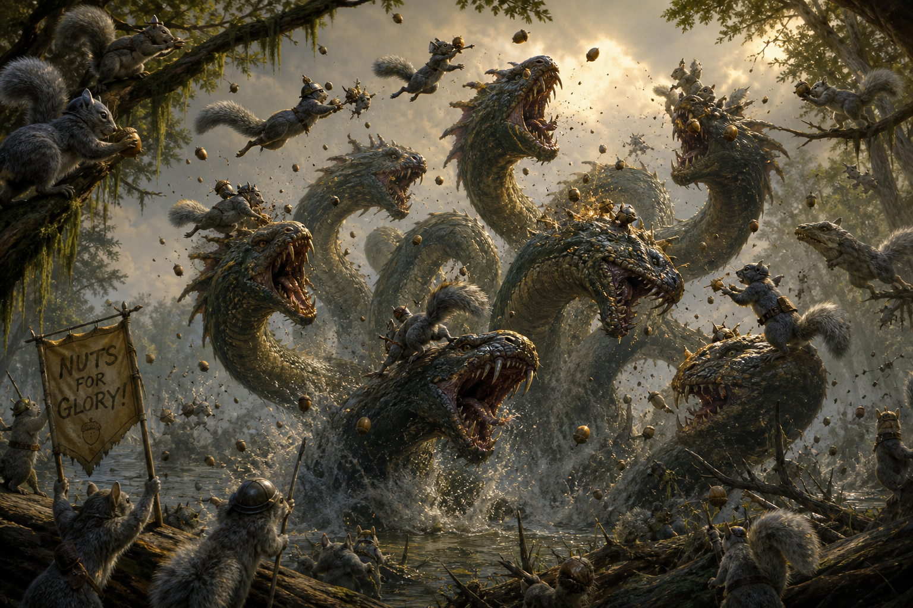
9. How many emperor penguins would it take to kill the Kraken?
Verdict: ≈ 5,000 penguinsEveryone pictures the Kraken dragging ships to the deep, but consider its position here: it is fighting the only bird on Earth that out-dives it into its own ambush zone. Emperor penguins routinely hunt at 400–500 m depths in water that would kill most mammals, they see beautifully in near-darkness, and they are among the most maneuverable swimmers alive. The Kraken is used to prey that flails at the surface. Penguins commute to its house.
A giant cephalopod's weaknesses are well known to sperm whales, who eat its smaller cousins daily: the soft mantle, the eyes, and the fact that a squid's entire body is unarmored muscle. Tentacles are devastating against a ship — a single rigid target — but grasping individual penguins is like catching thrown darts with rope. Each tentacle strike claims a bird or two; each miss leaves the limb extended and exposed to a dozen beak strikes at the grasping clubs, where the tentacle is most delicate.
The colony fights the way it survives Antarctic winters: in coordinated, rotating waves. Squadrons of 500 dive in relays, targeting the eyes to blind it, then the siphon — the jet nozzle the Kraken needs both to breathe and to flee. Ink clouds and thrashing claim perhaps a fifth of the force, but a blind Kraken with a shredded siphon cannot hunt, jet, or oxygenate. Five thousand emperor penguins — one large colony, fighting in shifts between fishing breaks — retire the sea's oldest legend. They will accept payment in krill.
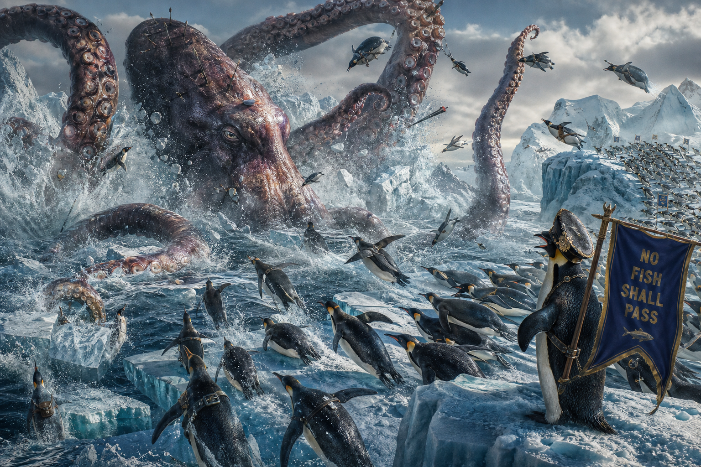
10. How many mallard ducks would it take to kill a Paraceratherium?
Verdict: ≈ 50,000 ducksWe saved the philosophical one for last. The mallard is the worst-armed animal on this list — no claws, no venom, a bill built for straining pondweed — and Paraceratherium is the largest creature ever to walk on land, a browser so big that adult individuals likely had no natural predators at all. No duck can meaningfully wound it. A million duck bites are a spa treatment. So how does the swarm win? It doesn't fight the body. It fights the schedule.
A 17-tonne herbivore lives on razor-thin margins: it must eat for most of its waking hours and drink enormous volumes daily. Ducks are the perfect blockade force — they own every waterhole, and they can relocate their entire army by air faster than the giant can walk. Fifty thousand mallards form a rotating harassment screen: wing-buffeting the eyes and ears whenever it lowers its head to browse, carpeting every water source, and maintaining a 24-hour quacking siege that makes rest impossible (a tactic banned by several conventions). The giant is never wounded — merely never allowed to eat, drink, or sleep again.
Megafauna of this size can starve in weeks but dehydrate in days. Duck casualties — from trampling, exhaustion, and simply forgetting the mission — run high in an operation this long, hence the inflated force size. Fifty thousand mallards, near-zero combat damage, one cathedral-sized herbivore defeated by pure logistics. The ducks call this "the siege of a thousand quacks." The ducks are extremely pleased with themselves.
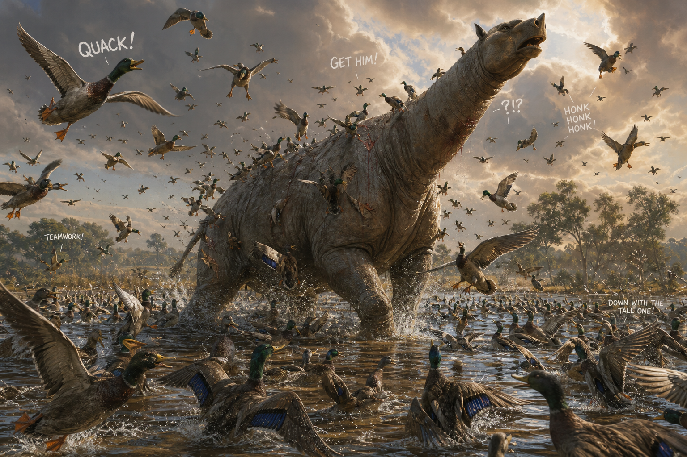
11. How many Canada geese would it take to kill a Cyclops?
Verdict: ≈ 30 geese- The eye is the whole fight. A Cyclops has a single, huge, unprotected target — and dive-bombing faces is already every Canada goose's favorite hobby.
- Odysseus needed wine, a fake name, and a sharpened stake. Geese skip the plan: three or four birds strike the eye in the opening seconds while the rest bite ankles and beat wings at head height.
- A blind giant on rocky island terrain is a falling giant — every stumble is met by coordinated shin attacks and relentless honking that prevents any recovery or rest.
- Casualties are real: one connected club swing or grab can take out several birds, and the first wave at the eye flies into an arm's reach of doom.
- Thirty geese — one flock from an average office park — with two-thirds held in reserve mostly out of tradition. The geese would have attacked anyway, unprovoked, for free.
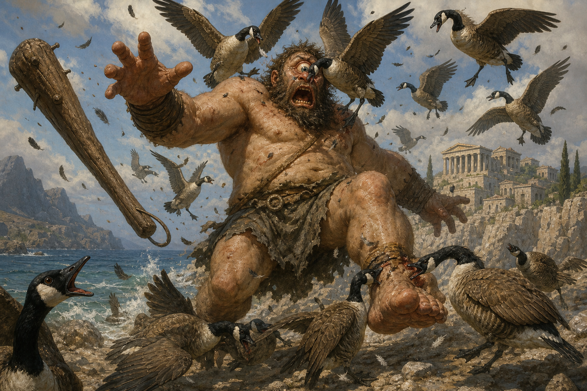
12. How many hedgehogs would it take to kill a Basilisk?
Verdict: ≈ 200 hedgehogs- The death-gaze is useless against a rolled-up hedgehog — a ball of spines has no eyes to meet. The entire army advances curled, blind, and immune, like slow-motion caltrop artillery.
- The basilisk's other weapon is worse for it: striking a hedgehog means biting 6,000 spines. Every attack the basilisk lands is a mouthful of needles it chose voluntarily.
- Legend says the basilisk dies from a weasel's odor and the crowing of a rooster — proof of a fragile constitution. Two hundred stressed hedgehogs huffing and clicking is well past its lethal threshold of annoyance.
- Endgame: the serpent, mouth full of quills and nowhere spine-free to slither, is slowly pin-cushioned as the balls converge and press in overnight.
- Losses come from venom spatter and frustrated tail slams — hence 200 hedgehogs, deployed in five concentric rings, none of whom ever see the thing they kill.
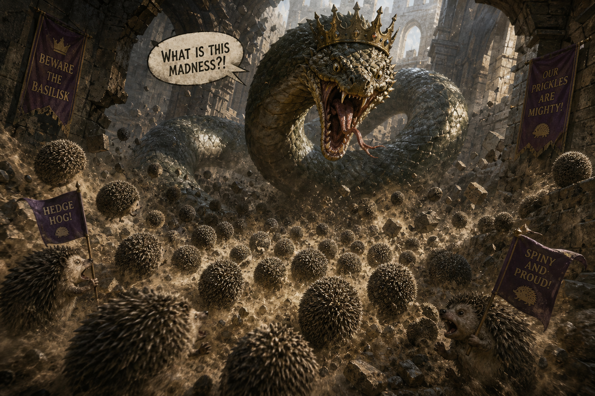
13. How many sea otters would it take to kill a Mosasaurus?
Verdict: ≈ 350 otters- Agility gap: a mosasaur is a torpedo — devastating in a straight line, clumsy in a turn. Otters corkscrew, reverse, and raft up; each lunge catches one or two otters while thirty counterattack the eyes and flipper joints.
- The rock factor: otters are tool users. Three hundred otters hammering the same eye ridges and gill-less snout with fist-sized stones is death by geology.
- Mosasaurs breathed air. Otters float effortlessly and dive freely — a scratched, half-blind giant must keep surfacing into the waiting swarm every few minutes, forever.
- The raft never sleeps all at once; shifts rotate between kelp naps and combat. The mosasaur gets no such luxury and burns calories like a furnace.
- Expect heavy first-wave losses to those terrible jaws — figure a third of the force — so 350 otters, each personally motivated by the fact that the mosasaur looks like it would eat a pup.
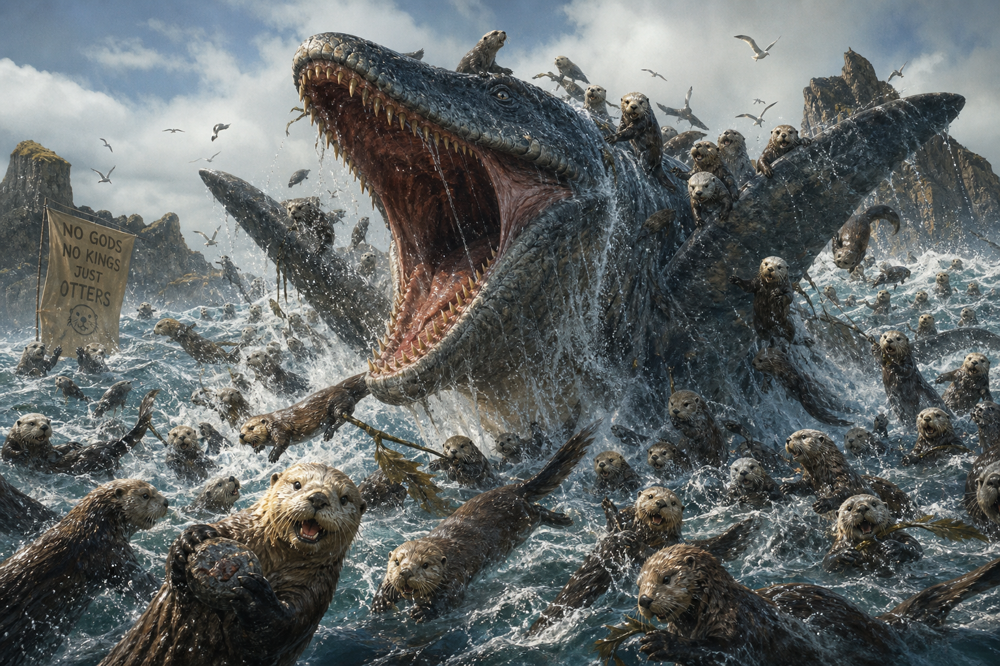
14. How many guinea pigs would it take to kill a Titanoboa?
Verdict: ≈ 3,000 guinea pigs- Let's be honest: the guinea pig is the least dangerous animal on this page. No claws that matter, a bite built for hay, and a startle response to falling leaves. This verdict is a triumph of mass, not menace.
- Titanoboa's weakness is thermodynamics: a cold-blooded ambush crusher that kills one prey item at a time, slowly, and then needs a long nap. Its kill rate is measured in minutes per victim — the swarm's arrival rate is measured in victims per second.
- Each constriction takes the snake out of the fight while 2,900 rodents chew. Guinea pig incisors grow constantly and can, given time and numbers, gnaw through anything — including a snake the size of a bus.
- The real weapon is the wheek: 3,000 guinea pigs screaming at fridge-opening volume in a closed jungle basin is a sonic event no reptile nervous system evolved to process.
- Losses to constriction, swallowing, and general confusion run enormous — hence 3,000 guinea pigs, history's least intimidating and most adorable siege army.
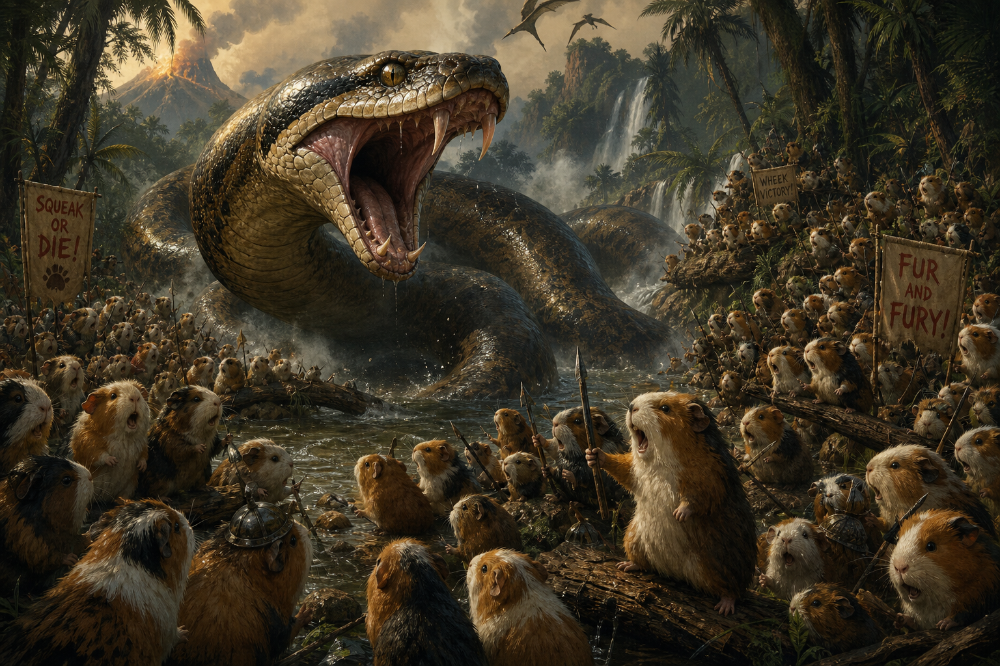
15. How many hummingbirds would it take to kill a Roc?
Verdict: ≈ 1,500 hummingbirds- This is the only all-air battle on the list, and it's a dogfight between a bomber and 1,500 fighters that can hover, fly backwards, and pull turns no giant wing can follow.
- A Roc's talons and beak are useless against targets the size of its own feather tips. It cannot land a single meaningful blow except by luck; its only real weapon is the hurricane wash of its wingbeats.
- Hummingbirds are famously fearless — they already chase off hawks a hundred times their size on principle. Scale courage to a swarm and the Roc's eyes, ear openings, and nostrils are under continuous needle-beak assault.
- Blinded and harried, a Roc can't hunt elephants — or see cliffs. The endgame is a controlled flight into terrain, guided by a glittering cloud herding it toward the mountainside.
- The constraint is fuel: a hummingbird fights minutes per sortie between nectar stops, so the army rotates constantly and losses to wing-wash tumble accidents add up. 1,500 hummingbirds, plus an enormous logistics chain of flowers.
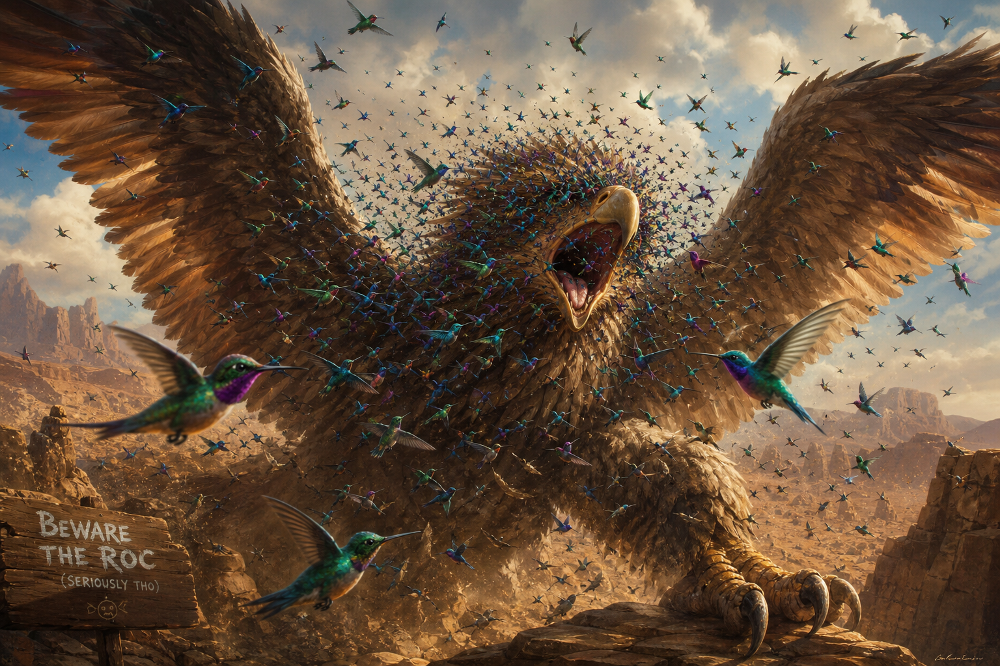
16. How many ticks would it take to kill an Argentinosaurus?
Verdict: ≈ 3,000,000 ticks- Argentinosaurus: ~90,000 kg, roughly 4,000 L of blood; lethal loss threshold ~40% (~1,600 L).
- An engorging female tick drains ~0.5 mL over several days; 1,600 L requires ~3.2 million feeding ticks.
- The sauropod has no way to remove them: its neck cannot reach most of its own body, and no grooming partner exists at that scale.
- Death by progressive anemia and tick-borne infection over 2–3 weeks. Tick casualties: near zero.
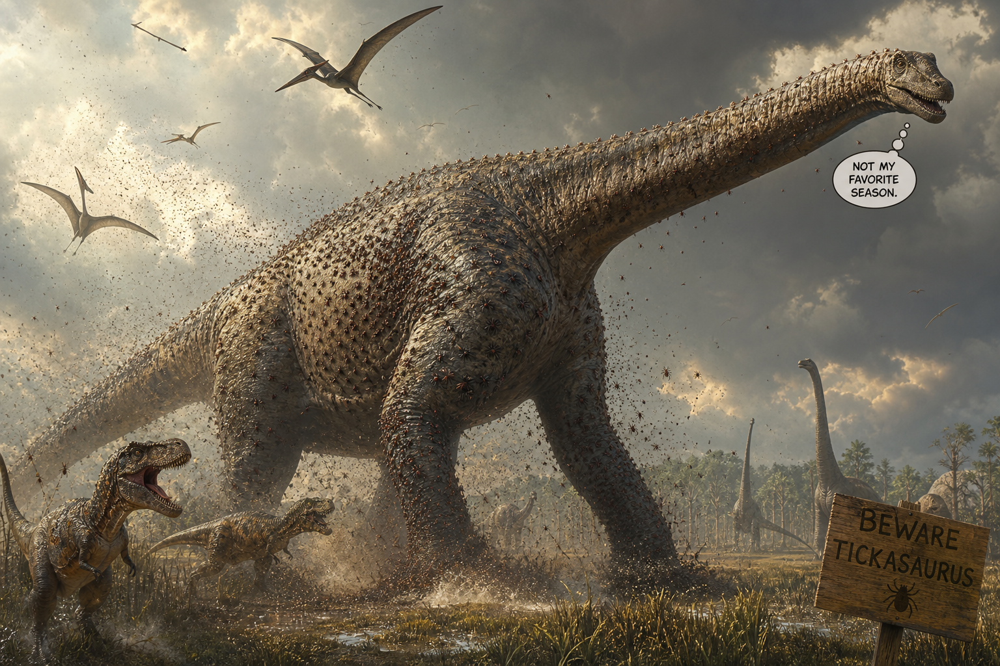
17. How many ladybugs would it take to kill a Triceratops?
Verdict: ≈ 10,000,000 ladybugs- Triceratops: ~8,000 kg, armored frill and hide; ladybug: 0.03 g, defended by toxic alkaloid hemolymph.
- Bites are irrelevant; the only viable weapons are airway obstruction and cumulative alkaloid load through the nostrils, mouth, and eyes.
- Ten million ladybugs is ~300 kg of insects — enough to pack the respiratory tract faster than the animal can clear it by snorting or bathing.
- Death by asphyxiation within hours; losses to trampling, tail swats, and being eaten are absorbed by the swarm's volume.
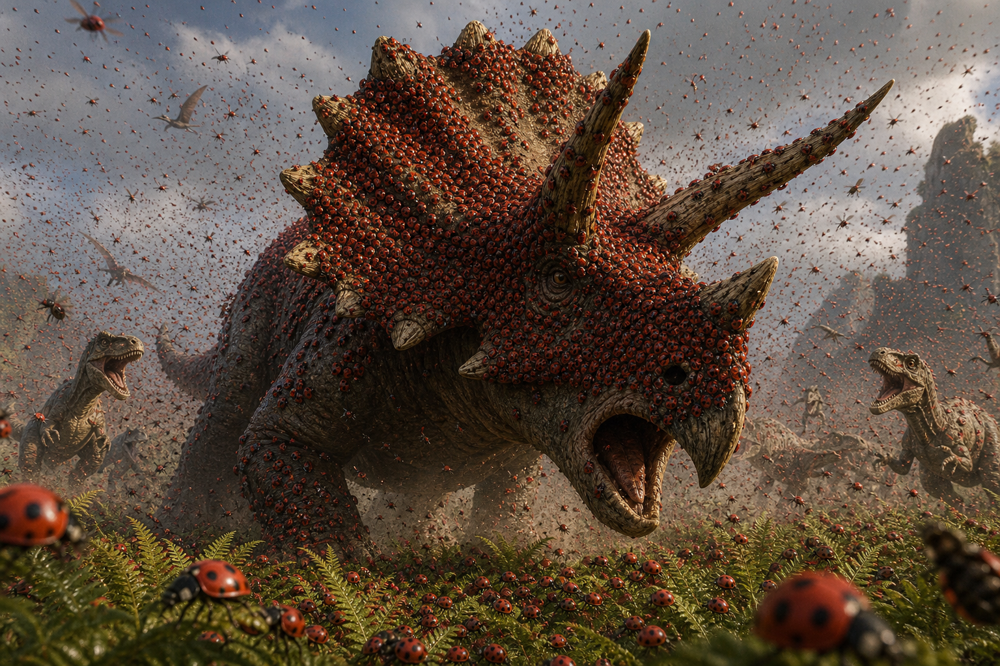
18. How many slugs would it take to kill a Megatherium?
Verdict: ≈ 500,000 slugs- Megatherium: ~4,000 kg giant ground sloth, folivore, must eat continuously; slug: 10 g, no offense whatsoever.
- The swarm's path to victory is contamination: slugs blanket every browsable leaf within the sloth's slow foraging radius.
- Slugs are carriers of parasitic nematodes (rat lungworm); mass ingestion during browsing produces progressive neurological failure.
- The backup mechanism is starvation — a slime-coated food supply and a half-million-slug replacement rate outpace one slow browser. Timeline: weeks. Slug losses: substantial but irrelevant to slugs.
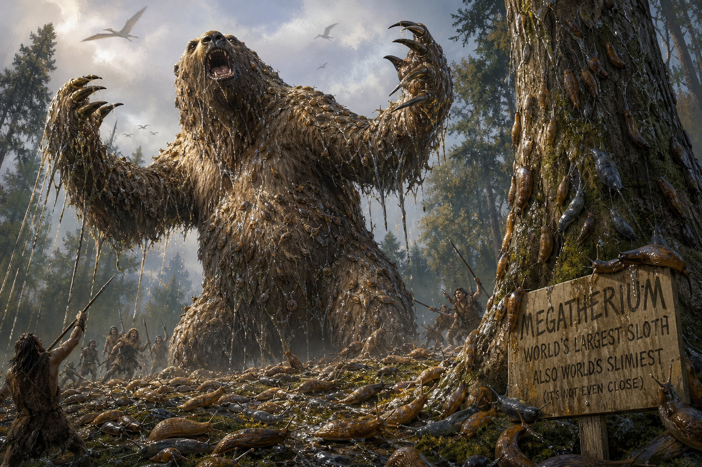
19. How many dragonflies would it take to kill a Quetzalcoatlus?
Verdict: ≈ 50,000 dragonflies- Quetzalcoatlus: 10–11 m wingspan, ~250 kg, the largest flying animal ever; dragonfly: 1 g, the most successful aerial predator ever (~95% hunt success).
- Dragonflies out-turn, out-hover, and out-accelerate anything with a skeleton; the pterosaur cannot land a single strike on them.
- Attack targets: eyes and the thin wing membrane, which tears under thousands of repeated bites at the same stress points.
- A grounded Quetzalcoatlus with torn membranes cannot relaunch or hunt; death by starvation and continued eye assault. Dragonfly losses limited to wing-wash collisions.
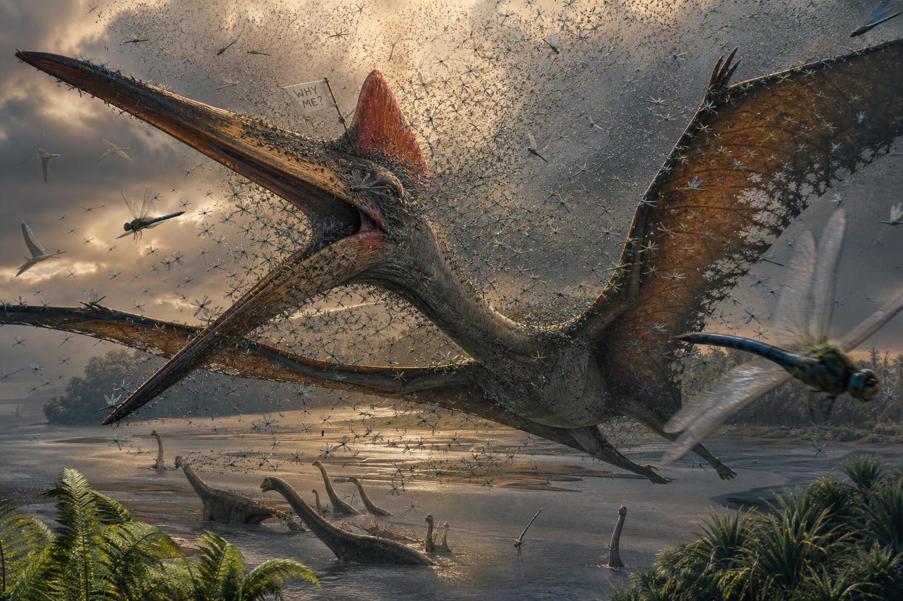
20. How many giant hornets would it take to kill the Minotaur?
Verdict: ≈ 3,000 hornets- Minotaur: ~500 kg bull-headed humanoid, axe, labyrinth home-field advantage; giant hornet: 2 g, venomous sting, can sting repeatedly.
- ~50 stings can kill a human; scaling to Minotaur mass and mythic constitution puts the lethal dose near 2,000 stings.
- The labyrinth is a liability: narrow corridors funnel the swarm, block escape, and render the axe useless against a cloud.
- 3,000 hornets provides the lethal dose plus a 50% margin for misses and swatted attackers. Time to incapacitation: minutes.
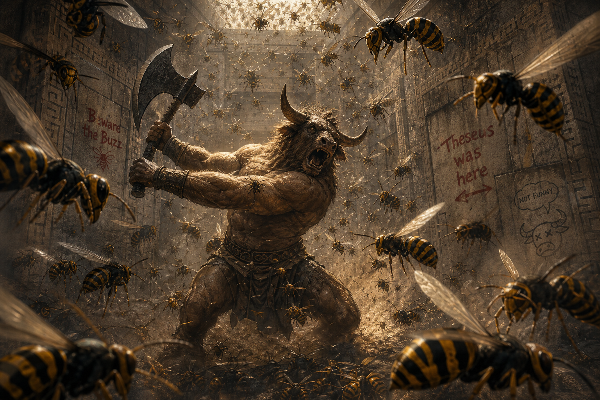